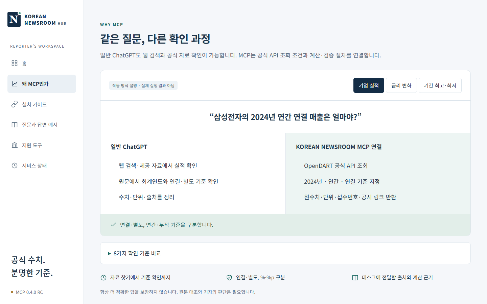
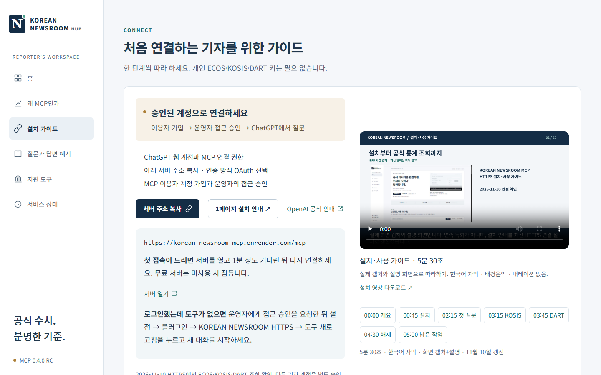
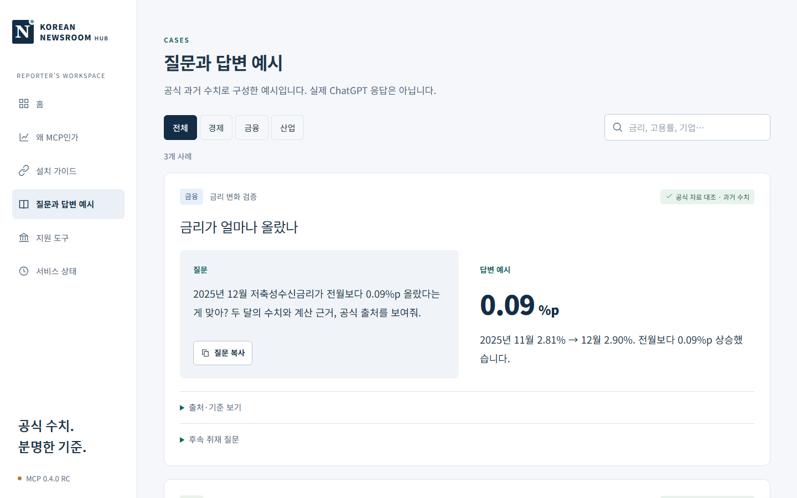
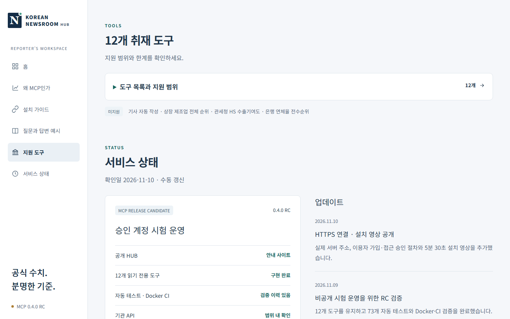

이런 도구입니다
ChatGPT에 삼성전자 매출을 물으면 그럴듯한 숫자가 나옵니다. 그런데 기자가 불안한 것은 숫자가 아니라 기준입니다. 연결인지 별도인지, 연간인지 누적인지, %인지 %p인지, 어느 시점의 값인지. 기준이 하나만 어긋나도 기사의 숫자는 틀립니다.
KOREAN NEWSROOM은 이 확인 과정을 도구에 맡깁니다. MCP(Model Context Protocol)로 ChatGPT에 공식 API 조회 도구를 붙여, 기자가 질문하면 ECOS, KOSIS, OpenDART를 직접 호출하고 원수치와 단위, 기준시점, 자료 식별자, 공식 원문 링크를 함께 돌려줍니다. 기자는 데스크에 넘길 출처와 계산 근거를 한 번에 얻습니다.
이 도구는 읽기 전용이고, 기사를 대신 써 주지 않습니다. 공식 데이터를 찾고 비교하고 검증하는 일만 합니다. 원문 대조와 최종 판단은 기자의 몫이라고 HUB도 분명히 적고 있습니다.
KOREAN NEWSROOM HUB는 한국은행, 통계청, 금융감독원 등 기관의 공식 서비스와 독립된 안내 사이트입니다. 도구는 승인된 계정만 쓰는 시험 운영 단계입니다.
HUB에서 볼 수 있는 것
같은 질문(삼성전자의 2024년 연간 연결 매출)을 일반 ChatGPT가 푸는 과정과 MCP가 푸는 과정을 나란히 보여 줍니다. 일반 ChatGPT도 웹 검색과 원문 확인은 가능하고, MCP는 공식 API 조회 조건과 계산·검증 절차를 연결한다는 차이를 설명합니다. 실제 실행 결과가 아닌 작동 방식 설명입니다.
ChatGPT 로그인에서 사용자 지정 MCP 서버 추가, OAuth 인증, 접근 승인 뒤 도구 새로 고침, 첫 질문과 후속 질문까지 11단계를 한 화면씩 따라 합니다. 개인 ECOS·KOSIS·DART 키는 필요 없습니다. 5분 30초 설치 영상과 1페이지 설치 안내도 받을 수 있습니다.
MCP 추가 메뉴가 없을 때, 서버 주소를 넣어도 연결되지 않을 때, 로그인했는데 도구가 안 보일 때, 호출량 제한이 걸릴 때, 공식 사이트와 숫자가 다를 때 직접 확인할 것과 운영자에게 문의할 것을 나눠 안내합니다. 토큰과 비공개 취재자료는 보내지 말라는 주의도 있습니다.
저축성수신금리 변화, 서울 중구와 부산 중구의 고용률 비교, 삼성전자 연결 매출 같은 예시 질문을 복사해 쓸 수 있습니다. 예시마다 기관, 기준시점, 자료 식별자, 표시 단위, 기자가 확인할 점과 후속 취재 질문이 붙습니다.
검색, 비교, 검증을 하는 12개 읽기 전용 도구와 지원 범위를 보여 줍니다. 기사 자동 작성, 상장 제조업 전체 순위, 관세청 HS 수출기여도, 은행 연체율 전수순위는 지원하지 않는다고 미지원 목록에 밝힙니다.
MCP 0.4.0 RC의 구현·테스트·배포 상태와 기관별 확인 결과를 날짜와 함께 공개합니다. 현재 상태를 부풀리지 않고 아직 안 된 일(일반 이용자 연결)도 그대로 적습니다.
화면 미리보기

왜 MCP인가 — 같은 질문, 다른 확인 과정

설치 가이드 — 처음 연결하는 기자를 위해

질문과 답변 예시 — 복사해서 바로 질문

지원 도구 — 되는 것과 안 되는 것
데이터와 확인 방법
질문과 답변 예시는 공식 과거 수치로 구성한 것이며 실제 ChatGPT 응답이 아닙니다. 화면 속 수치는 과거 확인 사례이지 현재 값이 아니고, API 단위 충돌은 공식 자료로 대조한 항목에 한해서만 보정하며 모든 항목의 검증을 뜻하지 않는다고 HUB가 밝히고 있습니다. 항상 더 정확한 답을 보장하지 않으며 원문 대조와 기자의 판단은 필요합니다.
할 수 없는 것들
이 도구는 기사 자동 작성을 하지 않고 읽기 전용입니다. 상장 제조업 전체 순위, 관세청 HS 수출기여도, 은행 연체율 전수순위처럼 지원하지 않는 질문도 있습니다. 숫자가 공식 사이트와 다르면 사용을 보류하고 통계표 ID나 공시 접수번호로 확인해야 합니다.
연결 방식에도 제약이 있습니다. ChatGPT 웹 계정에서 사용자 지정 MCP 연결 권한이 있어야 하고, 플랜 이름만으로 메뉴 제공이 보장되지는 않습니다. 서버는 무료 HTTPS 서버라 오래 쓰지 않으면 잠들어 첫 접속이 느릴 수 있습니다.
현재는 운영자가 승인한 계정만 이용할 수 있는 시험 운영 단계입니다. 일반 이용자 연결은 준비 중입니다.
기술 및 제작 방식
12개 도구는 자동 테스트 73개와 Docker·CI 검증을 거쳤고, 운영자 시험 계정에서 ChatGPT를 통한 ECOS·KOSIS·DART 조회를 2026-11-10에 확인했다고 밝힙니다.
개발 현황
MCP 0.4.0 RC. 2026-11-10 기준 HTTPS 서버 연결과 설치 영상을 공개했고, 이용자 가입과 운영자 접근 승인 절차로 계정을 받고 있습니다. 일반 이용자 연결은 준비 중입니다.